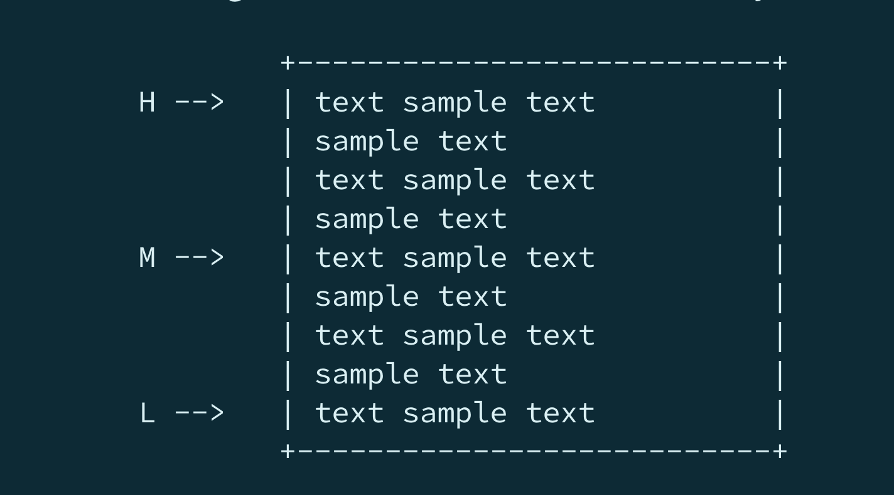
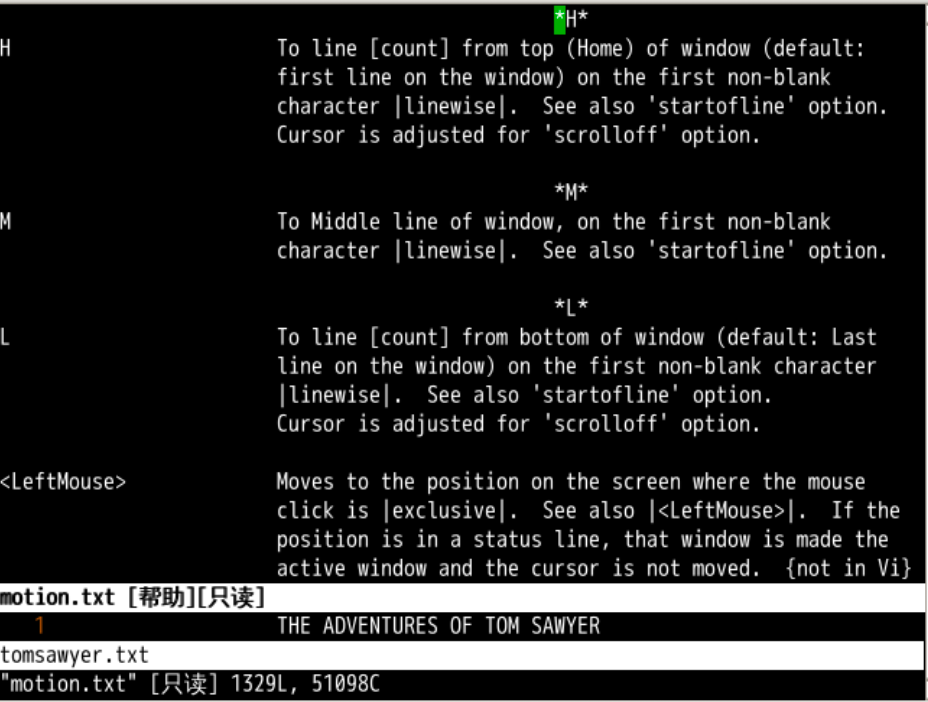
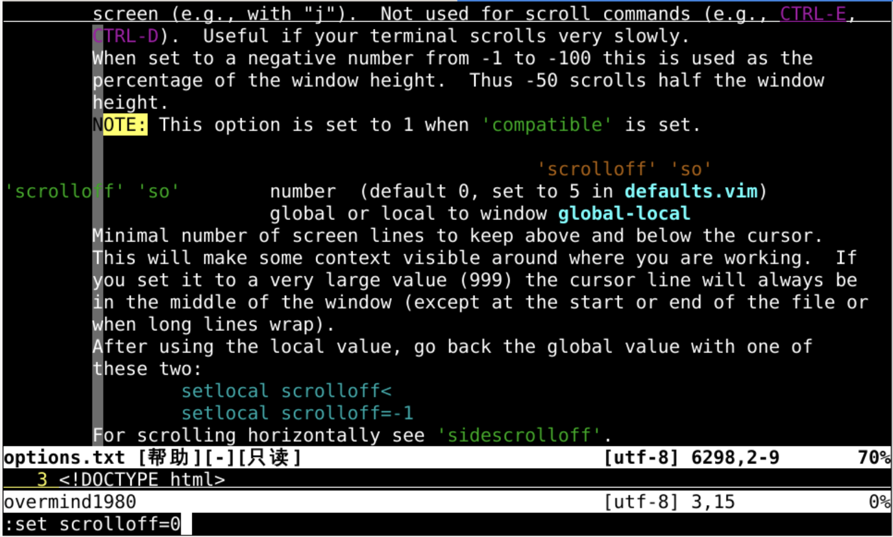
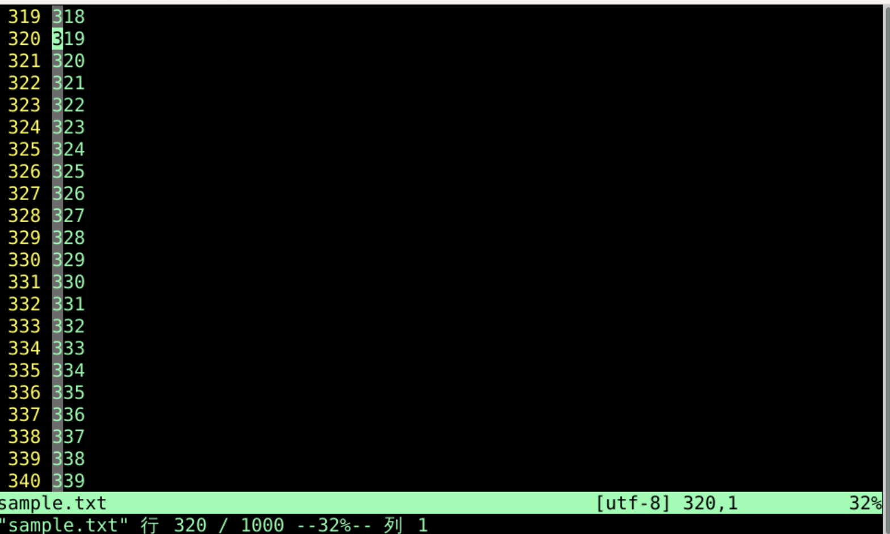
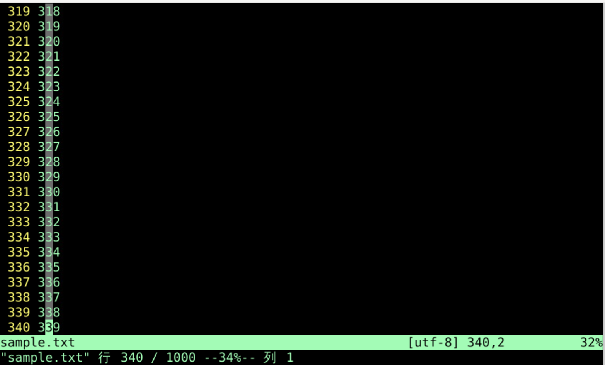
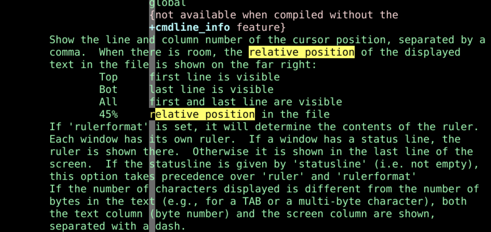
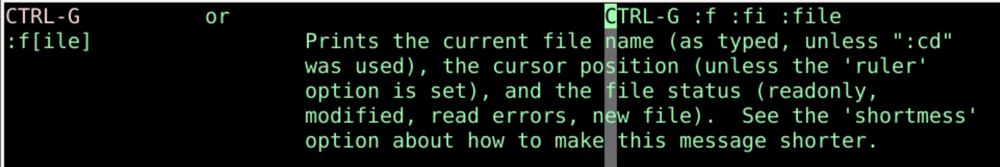

屏位行号
回忆上节课内容🤔
- 上次我们主要讲的翻页
:set scrolloff=2 控制上下留天留地- 上下翻页（这个最常用）
- ctrl + f 向下一屏
-
ctrl + b 向上一屏
-
上下移屏一行
- ctrl + e 屏幕向上一行
-
ctrl + y 屏幕向下一行
-
上下移屏一段
- ctrl + u 向上半屏
- ctrl + d 向下半屏
- 移动数量和
scroll 相关
- 上述翻页都可以用
[count] 翻倍
屏幕位置
:h H 可以找到在屏幕位置不动时，移动光标的办法- H -
Head 移动到屏幕的顶端
- M -
Middle 移动到屏幕的中间
- L -
Low 移动到屏幕的底部
- 会保持屏幕位置不变,把光标移动到允许的高中低位置

到达底端

- L无法到底?
:set scrolloff?:set scrolloff=0
- L到底
计算偏移
- 2 H 会移动到距离屏幕最顶端 第2行 的位置
- 3 L 会移动到距离屏幕最底端 倒数第3行 的位置

光标固定
:h zt
- z t
- 出现在光标在屏幕顶部
top - 光标在函数名上
- 直接看到函数的函数体
- z z
- z b
- 光标位置受到
scrolloff 影响
- 屏位和光标所在行还有一个小细节
位置细节

- 在只移动光标不移动屏位的情况下
- 下图最下面一行百分比为34%

- 上面两图屏位相同
- 但是光标在不同的位置时ctrl-g得到的位置百分比不同
- 这应该如何理解呢？
状态横条

- 状态横条的百分比是当前屏位在整个文档中行的相对位置
- 那我们在来看一下ctrl-g
ctrl-g

- ctrl-g中输出的是光标所在位置在整体文件中的相对比例
- 这些东西一般不会遇到
- 遇到就像这样查文档就可以解决疑问
总结
- 上次讲的翻页
- 这次先让屏幕位置固定，移动光标
- H -
Head 移动到屏幕的顶端
- M -
Middle 移动到屏幕的中间
-
L - Low 移动到屏幕的底部
-
然后让光标固定，移动屏幕的位置
- z t -
top
- z z - 光标在屏幕中间
- z b -
bottom
- 还有什么快速移动的方法吗？🤔
- 下次再说 👋